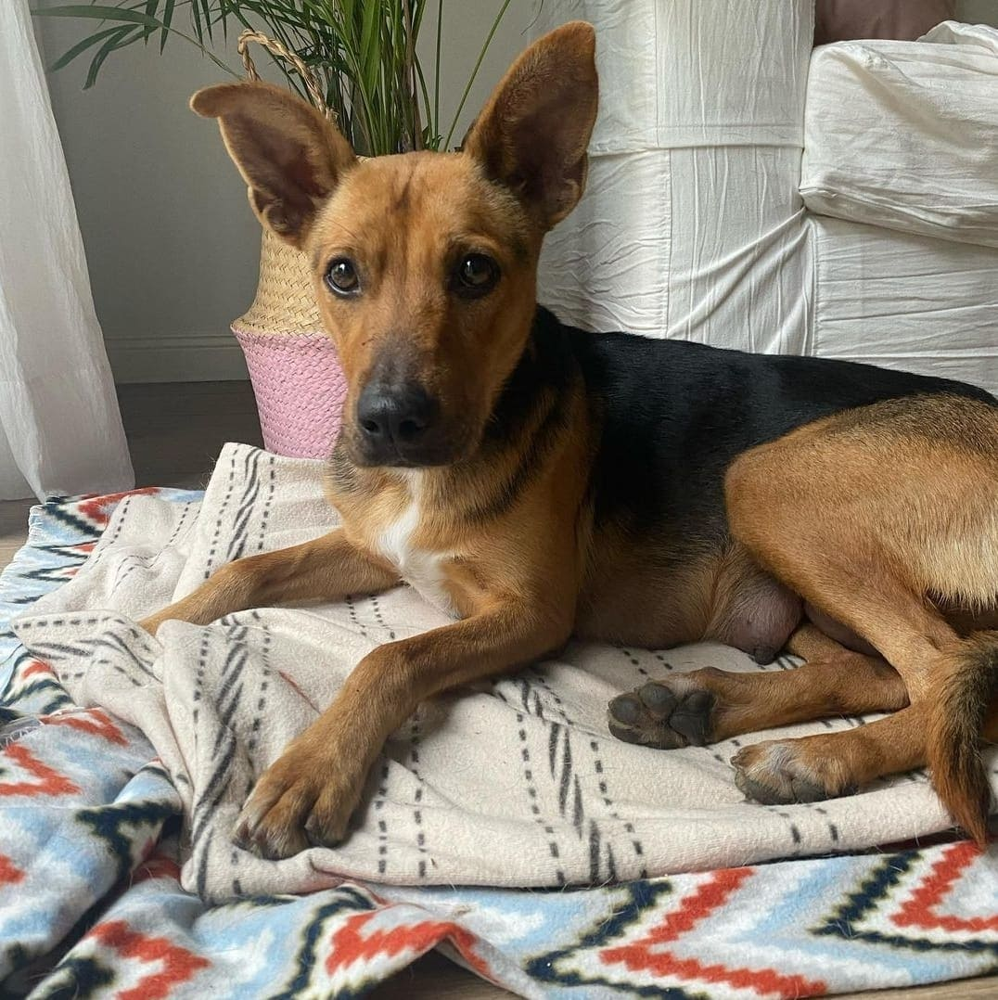

Rubio
Este gordito se llama Rubio 😊 Es obediente, cariñoso, dormilón, hace sus necesidades afuera, sale dos veces al dia. Se lleva bien con otros perros y ama estar acompañado, por eso es un poco llorón cuando queda solo pero nada que no se pueda corregir. Básicamente es un amor de perrito ❤️❤️🐶 Si crees que puede formar parte de tu familia pedinos el cuestionario de pre adopción 🙏🏻
